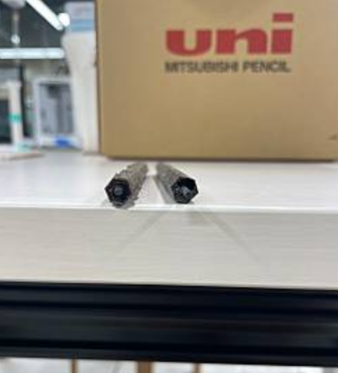
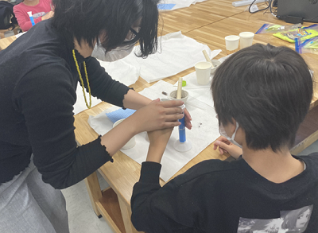
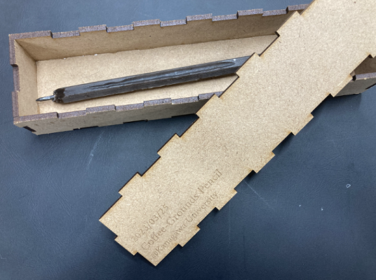

2023年1月終わりくらい？：サーキュラーデザインプロジェクトで先輩の班が鉛筆の削りかすを固めて鉛筆を再生するプロジェクトをしていた。
同時にコーヒーかすがラボで余ってたか何かで、コーヒーかすを鉛筆に再生できないのかな...となる
※コーヒーかす：蝋：ステアリン酸＝2:1:1の割合
今回はペットボトルのキャップ２杯：１杯：１杯分で1本の鉛筆を作った
参考：神奈川大学 公式サイト（外部サイト）



神奈川大学高大連携協議会フォーラム の事例研究のコーナーでワークショップの事例を発表することに
発表資料：パワポのダウンロードはこちらから